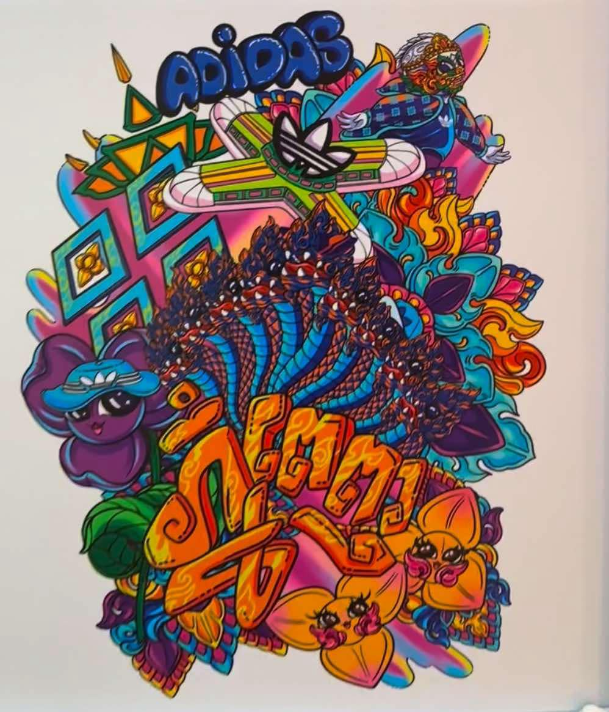
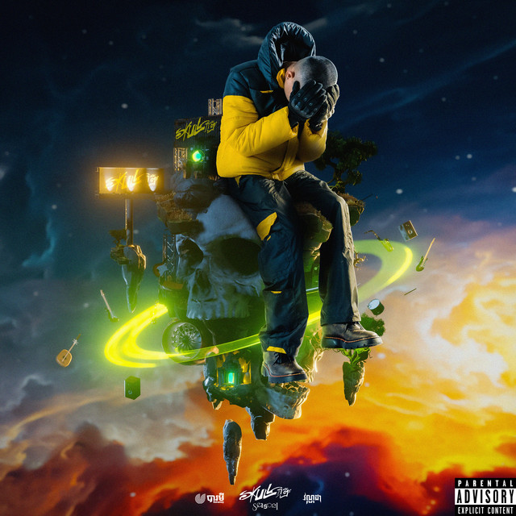

Inspitation 1: Lisa Mam

She is a Cambodian designer who has a unique style that is both modern and traditional.
She is a great example of how to blend the old with the new. Lisa is an inspiration for
me to be in design major because one day I love to see my design collaborate with big companies
such as Adidas as she did. I want to share my culture thru degning to the world and let people
who Know Cambodia is an amazing place that they should go and see.
Learn more about Lisa Mam
Inspiration 2: Vannda

He is a Cambodian rapper who inspires my life alot. One of his songs called Night
Thinker
always reminds me that I have my parent who always support me no matter what happens to me Most of his
songs inspire
me every day to not give up on myself and everybody around me.There was a time when I was so down
because I failed so
many classes, and I thought about dropping out of school. Listening to that song reminds me that my
parents always support
me no matter what happens, so I need to keep going for myself and my parents There I am today still
keeping going and becoming
better as a student in SFSU.
Listen to Vannda's music
Inspiration 3: Christiano Ronaldo

This one might not in the topic of artist but he is the one that I love the most, Christiano
Ronaldo. He is an inspiring figure! His dedication,
work ethic, and longevity in football are remarkable. He has consistently proven himself as one of the
greatest players of all time,
with numerous records and achievements to his name. What inspires me about him is his incredible
goal-scoring ability, his resilience,
and perhaps his journey from a kid living in a small town to becoming a global icon. The fact that he is
40 years old and playing and
scoring like a young man is so incredible to me.
Follow Christiano Ronaldo on Instagram